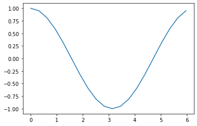

[1]:
#!pip install qulacs
#!pip install matplotlib
#!pip install numpy
#!pip install scipy
from utility import *
[2]:
import matplotlib.pyplot as plt
import numpy as np
import time
import random
from qulacs import QuantumState
from qulacs import QuantumCircuit
from qulacs.gate import DenseMatrix
from qulacs.circuit import QuantumCircuitOptimizer
ラムゼイ干渉をプロットする#
期待値の直接計算とサンプリングによる計算
パラメータ付き回路の取り扱い
ノイズの影響の観察（ノイズのサンプリングには時間がかかる！）
直接期待値を計算する#
[3]:
nqubits = 1
#状態の確保
state = QuantumState(nqubits)
#オブザーバブルの定義
measurement = Observable(nqubits)
measurement.add_operator(1.0,"Z 0")
#回転角を定義
theta = np.pi/4
#量子演算を作用
H(0).update_quantum_state(state)
RZ(0,theta).update_quantum_state(state)
H(0).update_quantum_state(state)
#期待値の計算
measurement.get_expectation_value(state)
[3]:
0.7071067811865471
\(\theta\)を与えると期待値を計算する関数を定義する
[4]:
def Ramsay_direct(theta):
#状態の確保
nqubits = 1
state = QuantumState(nqubits)
#オブザーバブルの定義
measurement = Observable(nqubits)
measurement.add_operator(1.0,"Z 0")
#量子演算を作用
H(0).update_quantum_state(state)
RZ(0,theta).update_quantum_state(state)
H(0).update_quantum_state(state)
#期待値の計算
return measurement.get_expectation_value(state)
[5]:
num = 20
angles = [2*np.pi*i/num for i in range(num)]
result = [Ramsay_direct(ang) for ang in angles]
plt.plot(angles,result)
plt.show()

サンプリングで期待値を推定する#
[6]:
nqubits = 1
#状態の確保
state = QuantumState(nqubits)
#回転角を定義
theta = np.pi/4
#量子演算を作用
H(0).update_quantum_state(state)
RZ(0,theta).update_quantum_state(state)
H(0).update_quantum_state(state)
#サンプリング結果を取得
shots = 10
res = state.sampling(shots)
print(res)
shots = 1000
res = state.sampling(shots)
#平均値の計算
average_value = 0
for i in range(shots):
average_value += (-2*res[i]+1)/shots #0,1変数を+1,-1に変換したければ -2x+1
print(average_value)
[0, 1, 0, 1, 0, 0, 0, 0, 0, 1]
0.7240000000000005
サンプリングによる期待値推定の関数を定義する
[7]:
def Ramsay_sampling(theta,shots):
nqubits = 1
#状態の確保
state = QuantumState(nqubits)
#量子演算を作用
H(0).update_quantum_state(state)
RZ(0,theta).update_quantum_state(state)
H(0).update_quantum_state(state)
#サンプリング結果を取得
res = state.sampling(shots)
#平均値の計算
average_value = 0
for i in range(shots):
average_value += (-2*res[i]+1)/shots #0,1変数を+1,-1に変換したければ -2x+1
return average_value
[8]:
Ramsay_sampling(np.pi/4,10000)
[8]:
0.6975999999999395
期待値の直接計算(analytic)とサンプリング(sampling)を比較しておこう
[9]:
num = 20
shots = 10
angles = [2*np.pi*i/num for i in range(num)]
result1 = [Ramsay_direct(ang) for ang in angles]
result2 = [Ramsay_sampling(ang,shots) for ang in angles]
plt.plot(angles, result1, label="analytic")
plt.plot(angles, result2, label="sampling")
plt.legend()
plt.show()

[10]:
num = 20
shots = 1000
angles = [2*np.pi*i/num for i in range(num)]
result1 = [Ramsay_direct(ang) for ang in angles]
result2 = [Ramsay_sampling(ang,shots) for ang in angles]
plt.plot(angles, result1, label="analytic")
plt.plot(angles, result2, label="sampling")
plt.legend()
plt.show()

ノイズありのラムゼイ干渉#
サンプリングによる統計誤差に加えて、操作におけるノイズをいれてみる。位相回転演算では、回転角\(\theta\) に依存して実行時間がかかると考えて、微小回転 delta_theta ごとに delta_gamma の確率で位相緩和を入れることにする。
[11]:
def noisy_Ramsay_sampling(theta,shots):
delta_theta = 0.1*np.pi
delta_gamma = 0.01
nqubits = 1
#平均値の計算
average_value = 0
#ノイズのインスタンスは毎回変わるべきなので1回のサンプリングをshots回繰り返す必要がある
for k in range(shots):
#状態の確保
state = QuantumState(nqubits)
num_rotations = int(theta/delta_theta)
#量子演算を作用
H(0).update_quantum_state(state)
# delta_theta の回転を num_rotations 回繰り返す
for i in range(num_rotations):
RZ(0,delta_theta).update_quantum_state(state)
#確率 delta_gammaでパウリZを作用させて位相を反転する（位相緩和ノイズ）
if random.random() < delta_gamma:
Z(0).update_quantum_state(state)
H(0).update_quantum_state(state)
#1つだけサンプリング結果を取得
res = state.sampling(1)
average_value += (-2*res[0]+1)/shots #0,1変数を+1,-1に変換したければ -2x+1
return average_value
[12]:
num = 10
shots = 100
angles = [2*np.pi*i/num for i in range(10*num)]
result1 = [Ramsay_direct(ang) for ang in angles]
result2 = [noisy_Ramsay_sampling(ang,shots) for ang in angles]
plt.plot(angles, result1, label="analytic")
plt.plot(angles, result2, label="sampling")
plt.legend(loc="upper left", bbox_to_anchor=(1, 1))
plt.show()

[ ]: